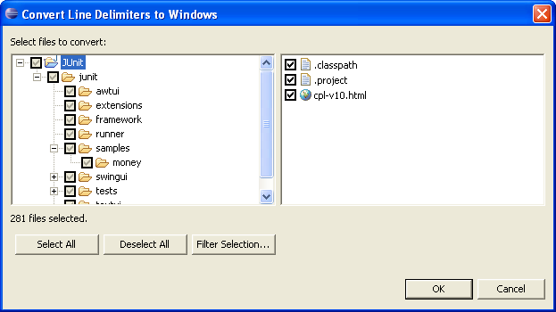

|
|
Support for bi-directional text |
Support for bi-directional languages (BIDI), has been extended across
the platform. Window layout orientation can be configured from
the command line, and a suitable default orientation is inferred from the locale.
Note that SWT fully supports BIDI on Windows only.

|
|
|
New Undo/Redo API |
Applications can now access a platform undoable operation history using
API in org.eclipse.core.commands.operations. IUndoableOperation defines
the interface for operations that can be undone and redone. Views and
editors can provide access to the undo and redo support by using the
UndoActionHandler and RedoActionHandler provided in
org.eclipse.ui.operations.
|
|
|
Filtering preferences and properties
|
The Preferences and Properties dialogs now
have a field for filtering the pages displayed to just those that have names
or keywords that match the specified prefix. The example
below shows matches for the keyword "tab".

|
|
|
Navigating preferences and properties |
General support for linking preference and
property pages allows pages with related settings to refer to each other and provide
quick access to the other page. Combined with web-style forward and
backward navigation in the top right-hand corner, it is now much easier
to work with a set of related preference pages.

|
|
|
Importing multiple projects
|
The Import > Existing Project into
Workspace command now allows you to search for all projects under a
specified location and import any projects found in one go. You can now
also import existing projects from TAR and ZIP archive files.

|
|
|
Import/Export to tar.gz format
|
The Import and Export > Zip File
wizards now support the tar.gz compressed archive file format popular on
UNIX systems. The wizards have been renamed Import and Export
> Archive File accordingly.

|
|
|
Editor lookup based on content type |
When determining the appropriate editor
to open for a given file, the file's content type is now taken into account.
Editors may now advertise that they are capable of working on certain content
types as well as their traditional file name and extensions.
|
|
|
File names containing colon and backslash characters |
It was previously not possible to create
resources in Eclipse with names containing colon (':') and backslash ('\')
characters. Such characters are now permitted when running Eclipse on
operating systems such as Linux that allow such characters in file names.
Care must be taken when file names must be meaningful across multiple
operating environments; Windows, in particular, does not allow either of
these characters in file names.

|
|
|
Support for executable and archive attributes |
You can now view and change OS-specific file
attributes such as the executable bit (Unix-based) and the archive bit
(Windows). CVS will now preserve these attributes when you check files
out of, or commit files to, a repository, and import wizards will preserve
the attributes of files and directories that are imported from a local
file system.

|
|
|
Line delimiter support
|
You can now set the line delimiter that is used when creating new text
files. You can provide a single setting for the entire workspace, or
for a given project. In addition, line delimiter conversions can now be applied
to projects, folders, and files, not just to the contents of a single editor.
 |
|
|
Single JAR plug-ins |
Eclipse now provides the ability to ship a plug-in packaged as a single
JAR file rather than as a directory of files. Think of this as folding the
plug-in metadata (plugin.xml etc.) into its code JAR. This move has a
number of benefits ranging from smaller footprint to easier/faster install
to fitting better with the standard Java notion of JARs.
In Eclipse 3.1 most plug-ins are shipped as JARs in all distributions.
This format is the new best practice for Eclipse packaging.

|
|
|
Improved editor context menus
|
Many commands that were only available in other views are now right
at your finger tips in the editor context menu. For example, you can
commit files to CVS or run and debug Java programs and Ant builds from
the editor's context menu.

|
|
|
View all keyboard shortcuts
|
While working with your favorite editors and
views in Eclipse, just press Ctrl+Shift+L to see a full list of the
currently available key bindings. This is a great way to learn what is
available in the UI and to speed up your productivity by learning more key
bindings. This information is also available in the improved General
> Keys preference page.

|
|
|
Perspective button dragging
|
Eclipse 3.1 now supports re-ordering of perspective buttons in the Perspective
switcher, as well as the ability to open a new window on a perspective by
dragging that perspective outside the perspective switcher.

|
|
|
Animations
|
The workbench supports more animations to help users understand where
UI elements are going. Minimizing a view for example is now animated. This
can be enabled/disabled via a preference in General > Appearance > Enable animations.
|
|
|
Improved error dialog for background operations
|
The error dialog for displaying background operations is now more
consistent with the error dialogs displayed elsewhere in the workbench.
Extra buttons are shown when additional information is available,
such as this dialog resulting from a failed CVS operation:

|
|
|
Import and Export of preferences |
The Import/Export wizards now support preferences. You can choose
to import or export all settings, or only specific preferences.
milestones.

|
|
|
Content type preference page |
A new preference page to edit content types and
their associated file names and character sets has been added under the
General/Editors preference page.

|
|
|
New capabilities preference page |
A new capabilities preference page has been
introduced to simplify management of capabilities in large Eclipse-based products.

|
|
|
Word completion
|
In any text editor, you can now complete a
prefix to a word occurring in all currently open editors or buffers. The
default key binding for word completion is Alt+/. |
|
|
Open Untitled File |
A text editor can now be opened without
creating a file first. Simply go to File > New > Other > Simple
> Untitled Text File.
|
|
|
Shared editor preferences
|
The General > Editors > Text
Editors preference page contains settings for all text editors.
Preferences previously duplicated on the Text and Java editor pages have
been merged, and other text-based editors can also be expected to honor
those settings where applicable in the future.

|
|
|
Preference for undo history size
|
The undo history size can now be set for text
editors; see the General > Editors > Text Editors preference
page:

|
|
|
Multi-line text search and replace
|
Regular expression patterns used in text searches will
match text straddling lines.

|
|
|
Welcome launch bar |
When the 'Go to the Workbench' link is selected
in Eclipse SDK welcome, the entire Welcome page is collapsed into a new
Welcome launch bar which appears in the right workbench window trim area
by default. The Welcome launch bar allows new users to quickly restore the
last Welcome page, or jump to one of the main pages using the shortcuts.
While the platform controls the basic behavior and the 'Restore'
button, background and foreground color as well as the shortcuts are
contributed via the welcome extension. See the plug-in manifest for the
org.eclipse.platform for an example of a Welcome launch bar definition.

|
|
|
New Help view |
Help has been brought closer to where you work
with the introduction of the Help view. It contains various pages that
provide assistance when you need it. If you press F1, the view will open
with the topics related to what you are working on at the moment. You can
also switch to All Topics and see what else is there in the local help.
And the new documentation search spanning local help, remote InfoCenters,
Eclipse.org, and the web is now directly accessible from the Help menu
(via Help > Search Help).

|
|
|
Dynamic Help now available for all dialogs |
The new dynamic help that was added to the
workbench window in M5 is now available in dialogs as well. When triggered
by the system-specific help shortcut (F1 on Windows, Shift-F1 on Linux GTK
etc.), a shell opens aligned with the dialog showing the related help
information. Multi-page dialogs like wizards, preferences, launch
configurations, searches, etc. trigger the help pane to update its content
as you flip from page to page.

|
|
|
Downloading of updates in background |
The Update Manager's install wizard (Help
> Software Updates > Find and Install) now allows downloading of
plug-ins in the background. This way you can continue working while
plug-ins are being downloaded. Once everything is downloaded, the install
phase (unzipping the jar files and moving them to the installation
directory) is still controlled by a modal dialog. |
|
|
Import/export update sites bookmarks
|
You can now export your update site bookmarks
to a file. This makes it easy to migrate your bookmarks from build to
build, share them across multiple Eclipse installs, or give them to other developers.

|
|
|
Update site mirrors
|
Update sites can now specify a list of servers
that mirror their content. As features are looked up on a mirrored update
site, you're prompted to pick any of the available mirrors.

(See bug 69008
for details on how to specified mirrors in the site.xml.)
|
|
|
Improved handling of feature
dependencies |
When installing a feature that depends on other
features, the install wizard lets you automatically include all available
dependencies. Press the Select Required button to include all pre-requisites of
the selected features, and then Install All to complete the install.
 |
|
|
Creating a new rich client application |
In the New Plug-in Project wizard, you now have
the option to create a minimal, yet ready-to-run, rich client platform
application.

|
|
|
RCP application templates |
RCP templates have been added to the New
> Plug-in Project wizard. The templates show how to create
top-level menus and toolbar actions, add key bindings to actions, and
create closable/unclosable views. The templates also demonstrate the
branding of a product by creating a product definition, branding images,
welcome page, and a splash screen.

|
|
|
RCP delta pack |
A new RCP delta pack is now available (it's
listed under the RCP SDK section of the download page). It contains all
the OS-specific fragments of the RCP plug-ins, and is aimed at RCP
developers that need to create a family of downloads of their application
for different OSes. It beats having to download all the OS-specific RCP
binary drops. |
|
|
SWT Browser widget improvements
|
Many improvements have been made to the SWT Browser widget.
Highlights include:
- On Windows, new windows can now be opened in a stand-alone
Internet Explorer browser.
- On Linux, the browser now works with Mozilla 1.7 GTK2 as well as with
Mozilla 1.4 GTK2 and above.
- A new execute method passes an arbitrary string of
JavaScript commands to be directly evaluated by the underlying native
JavaScript engine (Internet Explorer on Windows, Mozilla on Linux, Safari on
the Mac) in the context of the HTML document that is currently loaded in the browser widget.

The new Browser Demo example (shown above) illustrates how to integrate
HTML content with the SWT Browser widget into an application. The easy way
to get the SWT samples is via the new welcome page.
|
|
|
New spinner widget
|
SWT now provides a spinner widget
on all window systems. See org.eclipse.swt.widgets.Spinner.

|
|
|
GC.setLineCap, GC.setLineJoin
|
GC.setLineCap lets
you control how the end of a line should be drawn (flat, round, or square
styles as shown in the top line of the figure below). GC.setLineJoin
allows you to control how one line attaches to another one in methods like
GC.drawPolylines or GC.drawPolygon. Join styles
are bevel, miter, and round (bottom row)

See the SWT snippet for
drawing lines with different cap and join styles.
|
|
|
Mouse wheel events
|
SWT now provides events when the
user spins the mouse wheel. Note that the default behavior of scrolling
the scroll bar continues to work as before. See SWT.MouseWheel. |
|
|
Improved layout support
|
There are new methods on Composite
and Layout to allow applications to improve layout
performance and to force the laying out of all children even when there is
an intermediate parent that does not resize.
Composite.layout(Control[])Composite.layout(boolean, boolean)Composite.setLayoutDeferred(boolean)Layout.flushCache(Control)
|
|
|
Remove widgets from Layout
|
RowData and GridData have a new exclude
attribute for removing the associated widget from the layout management.
Previously, applications had to dispose and recreate widgets to achieve
this effect.
For more details, see the example snippet.
|
|
|
SWT for Solaris-GTK+
|
Solaris-GTK has joined the lineup
of supported configurations for which SWT and Eclipse are routinely built. |
|
|
Selection clipboard
|
Unix users on both GTK and Motif
can now select text and paste it with the middle mouse button. |
|
|
Native tree with columns
|
The SWT Tree widget can now display multiple columns. New
API in Tree, TreeItem, and TreeColumn provides the same support for
columns as Table. This obsoletes the TableTree widget, which
is now deprecated.

For more details see the example snippet.
|
|
|
Reorderable table columns
|
The display order of columns in a table can be changed by dragging the
column header (as well as being set programmatically).

For more details see the example snippet.
|
|
|
Starting SWT standalone applications inside Eclipse is
now easy
|
You can now run and debug your SWT application quickly and easily using
the new SWT application launcher. It handles such things as identifying
the location of the SWT native libraries. A shortcut to the launcher is
available in the context menu of your Java class via Run As > SWT
Application.

|
|
|
Advanced graphics
|
New API has been added for advanced graphics operations such as path
for curves and lines, alpha blending and transformations. This new API
requires the Cairo
Vector engine on GTK and Motif, and GDI+
on Windows.

For more details see the example snippet.
|
|
|
Windows XP look and feel for Buttons
|
Under Windows XP, buttons with images now show the expected look and
feel for the current skin.

For more details on Windows XP skins, see the SWT
FAQ.
|
|
|
New Link widget
|
The new Link widget displays text containing hyperlinks.

For more details, see the example snippet.
|
|
|
Strike through and underline in StyledText
|
Text can be underlined or a strike can be drawn through it with the new
StyleRange.underline and StyleRange.strikeout
fields.

For more details see the example snippet.
|
|
|
CVS outgoing commit sets
|
Outgoing commit sets allow you to organize
outgoing changes into logical groups before they are committed. To enable
commit sets, click on the commit set button  in the Synchronize View, then select an outgoing change and choose Add
To > New Commit Set... from the context menu. You can also appoint
a commit set as the default and have all subsequent outgoing changes added
to that set automatically. Commands on the context menu allow outgoing
changes to be moved between commit sets. When the change set is committed
to the CVS repository, the name of the commit set is used as the CVS
commit comment.
in the Synchronize View, then select an outgoing change and choose Add
To > New Commit Set... from the context menu. You can also appoint
a commit set as the default and have all subsequent outgoing changes added
to that set automatically. Commands on the context menu allow outgoing
changes to be moved between commit sets. When the change set is committed
to the CVS repository, the name of the commit set is used as the CVS
commit comment.

|
|
|
Colorful CVS label decorations
|
CVS label decorations can be configured to use
color and font to highlight file states. You can currently configure the
color and font for outgoing changes and for ignored files via the General
> Colors and Fonts > CVS preference page.

This feature uses the UI's recently enhanced decorators, which allow
plug-in writers to go further in decorating labels and icons to convey
various information.
|
|
|
Support for CVSNT
|
Thanks to the efforts of the CVSNT developers, the Eclipse
CVS client can now supports CVSNT. The latest CVSNT version 2.0.58b is the
version that has been tested with the 3.1 development stream. |
|
|
CVS commit review
|
The commit dialog now includes a list of the
files that are being committed. This makes it easy to browse the files
while writing the commit comment, and to hold back certain files by
removing them from the list. It's especially useful when committing
directly from the Package Explorer or Navigator view.

There's also a new CVS preference (Team > CVS)
that determines whether commit comments are mandatory.
|
|
|
CVS improved file type support
|
CVS now prompts whenever a file with an unknown
file type is about to be committed. This allows you to explicitly
configure a file type instead of CVS picking binary as the default. Also,
file type decisions can now be based on the file name alone (e.g. Makefile),
not just the file extension.

|
|
|
CVS key bindings
|
Key bindings can be added for CVS commands from
the General > Keys preference page; the CVS command are all
found under the CVS category. The key binding of CVS commands will work in
the Synchronize view and in any view that shows the Team menu.
There's also a new top-level CVS menu that can be added to any
perspective. Simply turn on the command group named CVS via Window >
Customize Perspective > Commands.
|
|
|
CVS branch and merge
|
The CVS branch wizard now lets you use content
assist to pick a branch from a project already branched in your workspace.

When merging you can simply specify the end tag and the wizard will
automatically find the appropriate start tag. If a start tag is not
available, you can still merge without seeing a preview in the Synchronize
view.
|
|
|
CVS filtering tags
|
The tag selection dialog used by the CVS
replace and compare commands to select a branch or version now shows
matching tags live as you type.

|
|
|
CVS operations on Java packages are no longer deep |
In the past, performing a CVS Update on a Java package would update the
package and all of its subpackages. A CVS Update (or any other CVS operation) will exclude
subpackages and update only those files contained in the package.
Note that this support is general to any model or repository provider.
Click here
for more details.
|
|
|
Ant debugger |
The new Ant debugger helps you debug the
execution of your Ant buildfiles. It includes the standard debugger
features like breakpoints, stepping, dependency call stack, and run-to-line support.

The presentation of Ant properties are also grouped in the Variables view
for your convenience:
- System: Ant properties set from the System for the the build
- User: properties such as those set using the -D option
- Runtime: all properties set during the execution of the build
|
|
|
Folding in the
Ant Editor
|
The Ant editor now supports folding of build file regions. Hovering over a
folded Ant element lets you peek at the hidden code. You can quickly control
folding presentation of a buildfile from the editor ruler menu.

|
|
|
Rename in File for the Ant editor |
You can now rename occurrences of properties and targets within the
same buildfile within the Ant editor. To activate use the editor context
menu or the Alt-Shift-R keyboard shortcut when the cursor is located
within the occurrence to rename.

|
|
|
Mark Occurrences in the Ant editor |
You can now enable the Ant editor to mark occurrences of properties and
targets. Mark occurrences is controlled via the Ant editor preferences and
editor toolbar action.


|
|
|
Hyperlink navigation in Ant editor |
The Ant Editor supports hyperlink navigation using the Ctrl key
modifier. The key modifier can be changed from the Ant > Editor >
Navigation preference page.

|
|
|
Ant editor selected elements only |
The Ant editor can now be scoped to show only
the selected source element in a buildfile. As with other editors, it is
hooked up to the Show source of selected elements only toggle
button in the Eclipse tool bar. |
|
|
Improved Ant navigation |
In the Ant editor, Navigate > Open
declaration (F3) will now navigate you to the referenced target or
property. |
|
|
Move to Ant 1.6.2
|
Eclipse now bundles Ant 1.6.2. Code completion has also been updated to
use Ant 1.6.2.
|
|
|
Errors now show in external Ant buildfiles |
Error and warning annotations now show even for
Ant buildfiles that are opened using File > Open External File... |
|
|
Ant manual at your fingertips |
In the Ant editor, place your cursor on the name of an Ant task, type,
etc. and press Shift+F2 to open a browser on the relevant page in
the Ant manual.

|
|
|
Ant target per build kind |
The Targets tab for an Ant builder allows you to specify the target(s)
that should be executed for each build kind. This includes the target to
execute when you invoke a "Clean".

|
|
|
More control over error reporting in the Ant editor |
You can now set the Ant editor to ignore all buildfile problems. As
well you can specify specific buildfile names that the editor should not
report problems for. Both settings are controlled using the Ant editor
preferences for Problems.

|
|
|
Console EOF |
In the Console view you can signal end-of-file
to a program waiting for input by pressing Ctrl+Z on Windows (Ctrl+D
on Linux). |
|
|
Console encoding |
The console can be configured to display output
using a character encoding different from the default encoding. To set the
console encoding for an application, use the Console Encoding
settings on the Common tab of a launch configuration. |
|
|
Capturing program output |
A program's output can now be captured in a file in addition to being
written to the console. The behavior is controlled by settings found on
the Common tab of launch configurations.
|
|
|
Multiple console views |
If you find you need to see multiple consoles at once, you can now open
additional Console views via the New Console View command found on
the Open Console drop-down menu in the Console view.
|
|
|
Breakpoint organization |
The Breakpoints view allows breakpoints to be grouped by type, project,
file, or working sets, and supports nested groupings. You can use
breakpoint working sets to group breakpoints into problem-specific sets
that can be quickly enabled and disabled as a whole. Newly-created
breakpoints are automatically placed into the default breakpoint working
set (displayed in bold). You can copy and paste and drag and drop
breakpoints between breakpoint working sets, and a breakpoint can be
placed in more than one breakpoint working set.

|
|